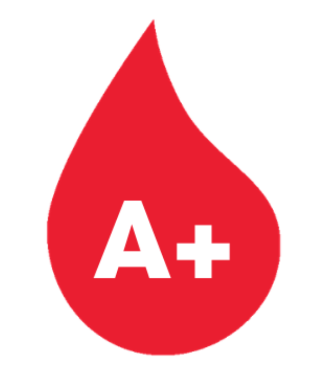
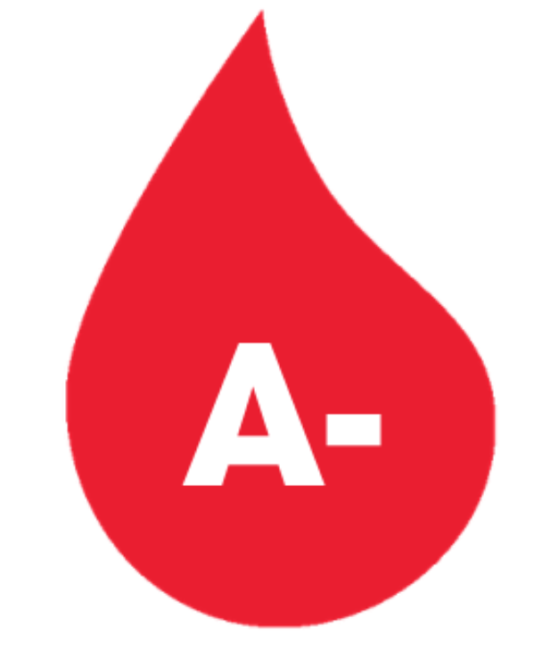
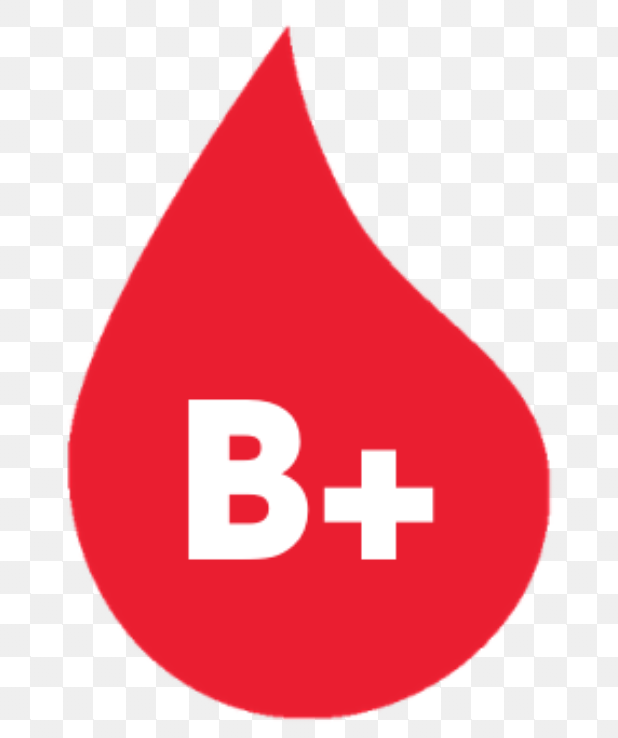
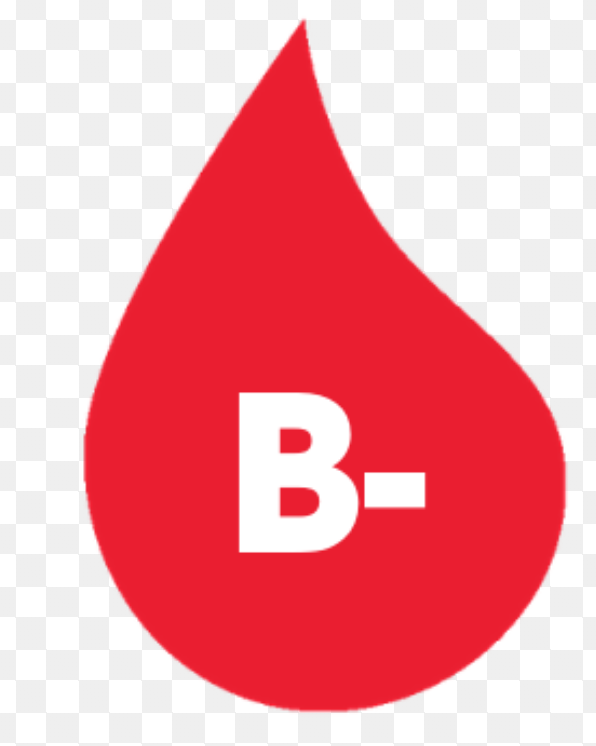
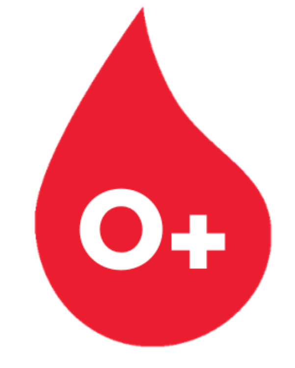
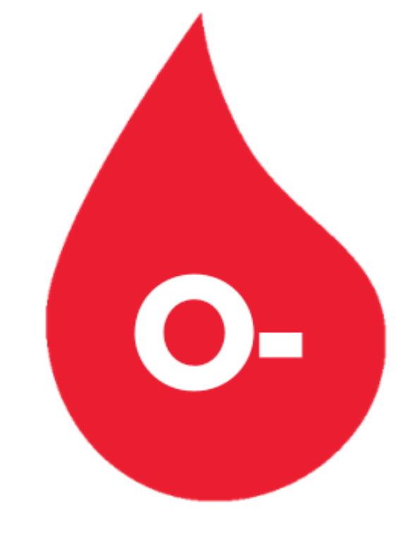
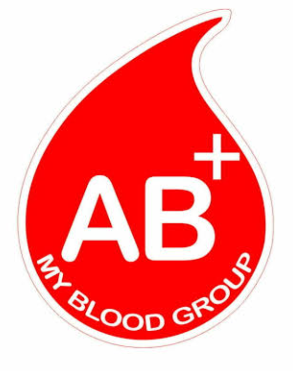
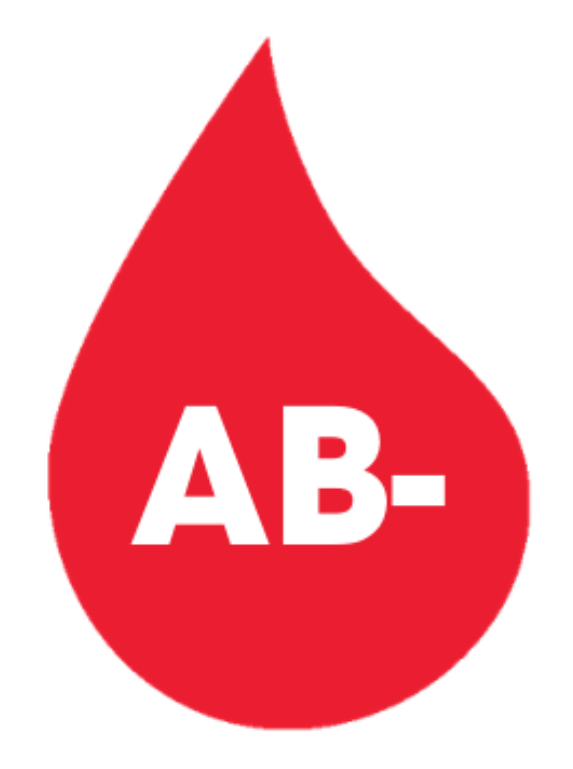

Menu
Process

A Positive:
A positive makes up almost a thrid of requests for blood from hospitals so we need to maintain a regular supply. A positive blood from male donors can also be made into special medicines to treat conditions such as dry eye syndrome.Platelets from A positive donations are also important.

A Negative:
A negative red blood cells can be used to treat around 40% of the population. However, A negative platelets are particularly important because they can be given to people from all blood groups.Your blood type is determined by genes inherited from your parents.

B Positive:
B positive is an important blood type for treating people with sickle cell disorder and thalassaemia who need regular transfusions.This means only 8% of donors have B positive blood. In total, 10% of people belong to blood group B, making it one of the least common blood groups.

B Negative:
B negative blood is one of the rarest blood types as just 2% of our blood donors have it. In comparison, 36% of donors have O positive blood which is the most common type. As B negative is one of the rarest blood types, it is hard to find new donors and to ensure we always collect enough blood.

O Positive:
O positive is the blood type most commonly requested by hospitals so we need to make sure there is a steady supply.O positive is the most common blood type as around 35% of our blood donors have it. The second most common blood type is A positive (30%), while AB negative (1%) is the rarest.

O Negative:
O negative donors are often called ‘universal donors’ because anyone can receive the red blood cells from their donations. Although about 8% of the population has O negative blood, it accounts for around 13% of hospital requests for red blood cells.

AB Positive:
AB positive red blood cells can only be used to treat people with AB positive blood.People with AB positive blood can safely receive red blood cells from any blood type. This means that demand for AB positive red blood cells is at its lowest level in a decade.

AB Negative:
AB negative is the rarest blood type in the ABO blood group, accounting for just 1% of our blood donors. In total only 3% of donors belong to the AB blood group.AB negative donations are extremely versatile, but because it is the rarest blood type finding new donors can be a challenge.